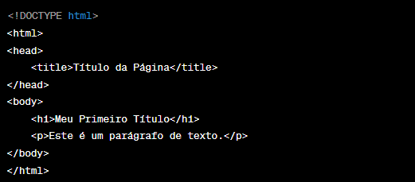

O HTML é a linguagem fundamental para criar conteúdo web e estruturar uma página da web. Vamos dar uma olhada nos conceitos básicos e em alguns exemplos simples.
O HTML, ou HiperText Markup Language, criado por Tim Berners-Lee, é a pedra angular da web, proporcionando estrutura e significado às informações em uma página. Ele permite a conexão de elementos diversos, como texto, imagens e vídeos, formando uma rede de dados que organiza conhecimento e comunicação. O HTML define a estrutura de um site, estabelecendo títulos, parágrafos e outros elementos, sendo o "esqueleto" de uma página web. Para completar essa estrutura, entram em cena as linguagens CSS e JavaScript, que, em conjunto com o HTML, formam a base de todos os sites modernos. Estas linguagens cuidam da aparência e da interatividade, dando vida ao conteúdo HTML.
Através de um documento HTML, ou seja, um documento com a extensão .html ou .htm., o navegador faz a leitura do arquivo e renderiza o seu conteúdo para que o usuário final possa visualizá-lo. Os arquivos .html podem ser visualizados em qualquer navegador (como Google Chrome, Safari, ou Mozilla Firefox).
Geralmente um site é composto por diversas páginas HTML, como por exemplo: um website que contenha três páginas (uma homepage, uma página de contato e uma página de produtos) receberá ao menos três documentos .html distintos, sendo uma para cada página do website.
O código pode ser escrito através de qualquer editor de texto, como o próprio bloco de notas. Cada página consiste em uma série de tags (também chamados de elementos) que podem ser considerados os blocos de construção das páginas. Portanto, esses blocos são a maneira com a qual o HTML faz a marcação dos conteúdos, criando a hierarquia e a estrutura do mesmo, dividido entre seções, parágrafos, cabeçalhos, e outros.
Através de qualquer editor de texto, como o Sublime Text, o NotePad++ ou até mesmo o bloco de notas, é possível criar um documento com a extensão .html que será renderizado pelos navegadores.
Conforme explicado anteriormente, este documento consiste em uma série de tags. As tags são códigos que definem toda a estrutura da página, tais como o seu tamanho, a fonte da letra, as cores, as quebras de linha e etc. A maioria dos elementos do documento HTML são compostos por uma estrutura de abertura e uma de fachamento, como < tag> e
Digamos que você queria escrever um paragrafo, chamamos então a tag < p>, escrevemos o paragrafo e finalmente fechamos a tag com < /p>:
< p>Meu primeiro paragrafo.< p/>
Dessa forma, ao salvar o arquivo com a extensão .html e abri-lo em um navegador, você verá o parágrafo escrito na tela do navegador.
Atualmente existem mais de 140 tags, mas algumas delas quase não são utilizadas. Dentre as mais utilizadas temos:
Agora que já sabemos como funciona e quais as suas principais tags, vamos entender como é formado a estrutura básica de um documento HTML.
O documento deve conter uma declaração informando o doctype, que no caso do HTML5, basta declarar com o elemento < !DOCTYPE html>. Após isso iniciamos nosso documento com a tag < html> que deverá ser fechada ao final do documento com < /html>. Posteriormente, nosso documento deverá ter um elemento < head> que receberá todas as informações básicas da sua página, como o título, links de elementos externos, metadados, etc. Declaramos então um título para página através da tag < title>. Finalmente abrimos então a tag < body> que consiste no corpo do nosso documento, onde ficarão todos os elementos que serão renderizados na tela do navegador.
Dessa forma, temos a estrutura básica do nosso documento html:
Para que não ocorram erros de renderização ou incompatibilidade de caracteres, devemos também declarar o padrão de teclado. No Brasil e em boa parte da América Latina, utilizamos o padrão UTF-8. Dessa forma, através da tag de metadados , vamos declarar dentro de um atributo charset que nosso padrão é o UTF-8. Temos assim a estrutura básica de nosso documento HTML:

Em 1980, o Físico Britânico Tim Berners-Lee, iniciou um projeto baseado na Marcação de HiperTexto, denominado ENQUIRE. Este projeto foi realizado inicialmente através da linguagem de programação Pascal. Anos mais tarde, em 1889, Tim Berners-Lee e o estudante Robert Cailliau conseguiram implementar a primeira comunicação entre o usuário e servidor através do protocolo HTTP. Com isso, surgia então a World Wide Web (www), a web que conhecemos hoje.
Com o objetivo de facilitar comunicação e disseminação de documentos entre pesquisadores, ele criou então a linguagem de marcação de hipertexto, o HTML. A sua primeira versão foi publicada em 1991 e foi baseada na SGML, uma linguagem de marcação utilizada para a estruturação de documentos. O SGML já possuía diversas tags que foram herdadas pelo HTML. Contudo, a maior diferença entre essas duas linguagens, é que o HTML implementava a tag , permitindo a ligação de uma página a outra, conhecido como link. A interligação entre documentos é a base do funcionamento de toda Web.
A linguagem de marcação de hipertexto ficou bastante conhecida quando começou a ser utilizada para formar a rede pública daquela época. Alguns anos mais tarde, se tornaria a linguagem padrão da internet que conhecemos hoje.